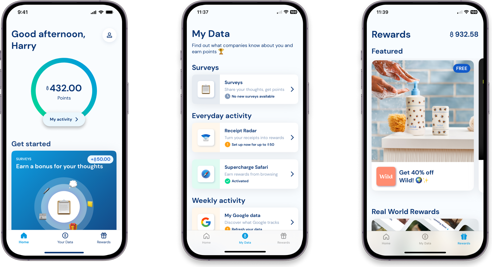
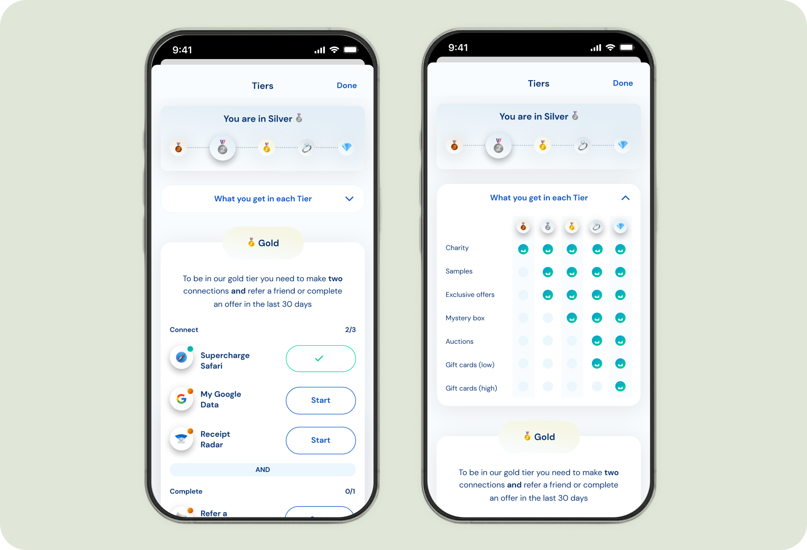
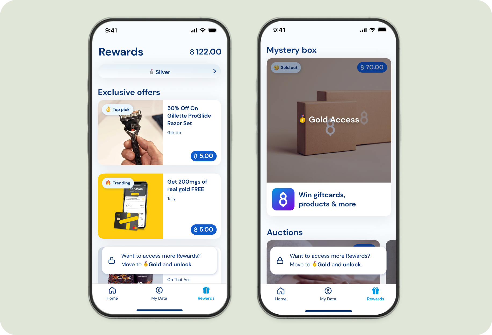

The context
Rewarding people for their data.
Gener8 is an app and browser that allows its users to take control and be rewarded for sharing their data. I started doing freelance work for Gener8 right before they were featured on BBC's Dragon's Den in 2020. They received funding and have evolved from a browser extension, then a browser, and released their app in 2022. I have done work on and off during this journey, but they were my sole client between 2022–2024.

The problem
Too few data streams, too little engagement.
Users were connecting only a few data streams, resulting in low engagement and limited platform value.
The process
Research, then iterate until it was clear.
We began with in-depth competitor research to understand how users typically interact with tiered systems and what design patterns they find intuitive. Past user interviews highlighted that our audience is highly reward-driven but often confused by unclear instructions.
With that in mind, I explored several design flows to communicate the tier structure more effectively. The process was highly iterative. Our Product Manager requested multiple concepts, and we refined the designs over several rounds based on internal feedback and usability considerations.
What users needed
Three things had to be obvious.
Current tier
Instantly identify where they are in the system.
Next steps
Understand what to do to reach the next tier.
The whole system
Clearly grasp how the entire tier structure works.

The solution
Gamified sharing, better rewards at each step.
I designed a tiered rewards system that gamified data sharing. It encouraged users to connect additional data sources by offering progressively better rewards at each tier.